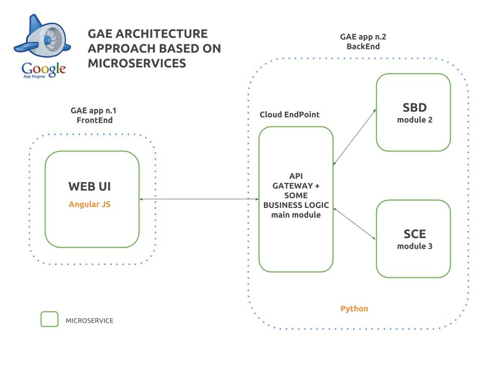

SMS
Students Management System
Un proyecto de ButterFlyDevs
Un Agilizador de procesos para centros docentes
La idea de software a medida convertida en un proyecto Open Source
El problema
Papel como principal soporte.
Procesamiento y análisis manual de la información.
Procesos internos manuales.
Procesos internos manuales.
Un sistema ineficiente
Nuestra solución
Un sistema en la nube que centralice y aporte valor a los datos y procesos.
¿Cómo?
Digitalizando la mayoría de la información y procesos sensibles.
Ofreciendo una interfaz sencilla y potente.
Posibilitando la recolección y análisis de datos instantánea.
Todo en una aplicación web
Corriendo en cualquier dispositivo con un navegador.
Sin inversión en infraestructura hardware.
Con una disponibilidad 24x7x12 por un coste mínimo.
connection with third party apps


Stand Alone

Arquitectura
Microservicios
- Escalabilidad.
- Mantenibilidad.
- Despliegue progresivo.
- Alto desacople.
- Fragmentación del desarrollo.

Tecnología

Angular JS
Python

REST
Representational State Transfer

Google's Remote Procedure Calls Library


Infraestructura
¿Dónde realizamos el despliegue de la aplicación?
¿Amazon AWS?
¿Microsoft Azure?
¿Heroku?
¿Open Shift?
¿Google App Engine?
...
Primera aproximación
El equipo
¿Quién hay detrás de todo esto?
 |
 |
... pero nos faltas tú!
something else?
Ask us!